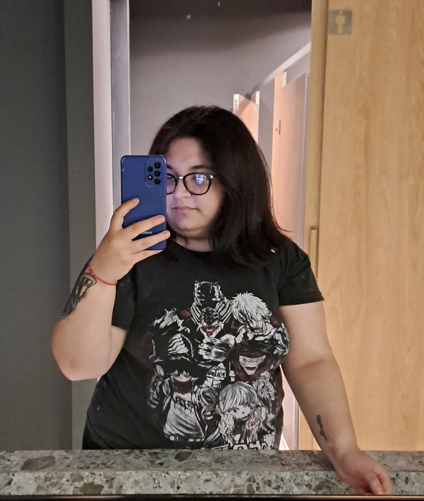

En breve resumen, esta esta es una pagina creada por Thomas Milagros y Falero Daiana donde se muestra lo que fue el proceso de esta ultima entrega, para dar un poco mas de contexto, en principio unimos la aventura grafica (utilizando "El Marciano" de Ray Bradbury) con el juego Pong
Trabajo final tecno 1
Un breve resumen de "El Marciano"
- El cuento narra la historia de La Farge y su esposa, quienes viven en Marte. Un día, mientras disfrutan de la primera lluvia de la temporada, La Farge menciona su deseo de haber traído a su hijo Tom con ellos. Tom murió hace tiempo en la Tierra, y La Farge siente su ausencia. Esa noche, durante una tormenta, La Farge cree ver a alguien parecido a Tom fuera de su casa. Aunque la figura no responde a sus preguntas, La Farge siente que se parece a su hijo. Más tarde, descubren a un joven llamado Tom cerca de su casa, y La Farge cree que es su hijo resucitado. Sin embargo, el chico revela que no es Tom, sino una entidad que toma la forma de las personas que la rodean. A pesar de la resistencia inicial, La Farge y su esposa aceptan al joven en su hogar y lo tratan como a su propio hijo. La trama se complica cuando, durante una visita al pueblo, Tom (o la entidad que lo imita) se escapa y es perseguido por la gente del lugar. La Farge intenta proteger a "Tom", pero la historia culmina en un enfrentamiento en el embarcadero. Aunque inicialmente se piensa que han atrapado a un criminal, la realidad es que la entidad puede asumir múltiples identidades, confundiendo a la gente del pueblo. La narrativa explora la dualidad entre la realidad y la percepción, así como la idea de aceptación y pertenencia en un mundo marciano lejano.
Integrantes
Mi nombre es Milagros Thomas, tengo 23 años, nací en la ciudad de La Plata pero actualmente vivo en Berisso, en 2023 ingrese a la licenciatura en Diseño Multimedial y en 2024 voy a empezar la tecnicatura universitaria en Fotografía.
Mi nombre es Falero Daiana tengo 21 años, soy de La Plata y arranqué Diseño Multimedial este año, el año pasado estaba estudiando actuacion en la UNA y al darme cuenta que no me gustó decidí buscar otro rumbo, actualmente estoy trabajando para una agencia de marketing "TOPIC" y de a poco ya voy descubriendo que es lo que quiero hacer con mis aprendizajes en la carrera.
Un poco de lo que fue el proceso de esta aventura...
Para empezar con este trabajo primero teníamos que pensar bien que cuento ibamos a usar y que juego, decidimos usar el juego pong ya que encajaba bien con una parte de la historia en la que La Farge y el Sr Spaulding pelean por quedar con el marciano. Siendo sinceras, nos costó un monton este trabajo, de hecho el profe de alguna manera nos terminó ayudando para que podamos llegar bien a la entrega pero finalmente despues de tanto estres, salió lo siguiente: